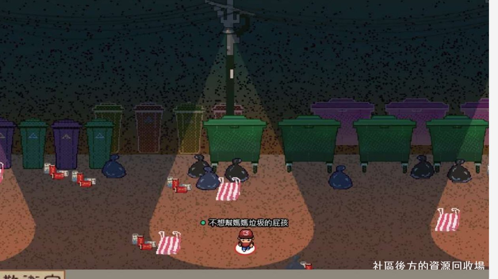
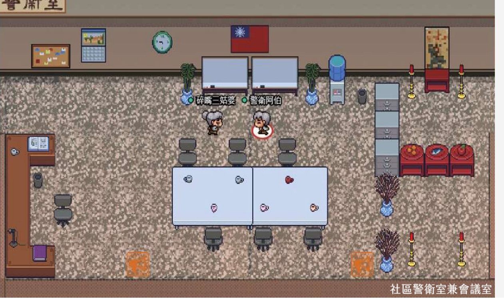

把劇本殺搬進 Gather TownMoving Murder Mysteries into Gather Town 疫情停業 72 小時後開始的線上產品線The online product line born from a pandemic shutdown
2021 年三級警戒，實體店一夜停業。我主導把真人劇本殺搬到線上——不是開視訊唸劇本，而是重新設計一套有空間、有搜證、有主持人的線上遊戲體驗。Taiwan's 2021 lockdown closed the venue overnight. I led porting live-action murder mysteries online — not script-reading over video calls, but a redesigned game experience with space, investigation, and live hosts.
Game DesignSpatial DesignProduct OpsCrisis Pivot
單位Company
謀殺衛斯理（LARP 劇本殺工作室）Murder of Wesley (LARP studio)
角色Role
專案管理與視覺設計師PM & Visual Designer
期間Timeline
2021（疫情三級警戒期間）2021 (COVID Level-3 alert)
成果Outcome
開闢線上產品線，銜接停業期營收New online product line bridging the revenue gap
01危機與選型The Crisis & the Platform Bet
劇本殺是高度依賴實體的生意：包廂、道具、面對面演出。停業意味著營收直接歸零。當時市面的線上玩法有三種——專門 App、Discord、其他軟體——多數淪為「視訊唸劇本」，失去了劇本殺最核心的沉浸感。我們選了第四條路：Gather Town ＋ 自建系統。理由：免下載（Chrome 即開）、2D 空間有「人在現場」的感覺、就近語音天然支援密談、地圖可以為每個劇本客製。Murder mysteries are an intensely physical business: themed rooms, props, face-to-face performance. Shutdown meant zero revenue. Online options at the time — dedicated apps, Discord, or generic tools — mostly devolved into "script reading over video," losing the genre's core immersion. We took a fourth path: Gather Town + a custom-built system. Rationale: nothing to install (runs in Chrome), 2D space restores the feeling of being somewhere, proximity voice natively supports secret conversations, and maps can be custom-built per script.
每個劇本一張客製地圖：場景依故事打造——實體店做不到的壯觀潭水、詭異奇幻空間，線上反而成為優勢。A custom map per script: scenes built to the story — vast lakes and uncanny spaces impossible in a physical venue became an online advantage.
RPG 式主動搜證：玩家用鍵盤操縱角色移動、調查空間與物件——把「翻找線索」的身體感搬到線上。RPG-style active investigation: players move characters and inspect rooms and objects — restoring the physicality of hunting for clues.
就近語音＋包廂＋廣播：聽不到遠處的人說話（寫實！）、私聊包廂供密謀、全場廣播給主持人——三層溝通結構對應劇本殺的公開討論／私下串供／主持控場。Proximity voice + private rooms + broadcast: you can't hear people far away (realistic!), private booths enable scheming, and global broadcast serves the host — three communication layers mapping to open discussion, secret collusion, and host control.
保留真人主持：拒絕全自動化。主持人的臨場反應是沉浸感的靈魂，線上只是換了舞台。Live hosts retained: we refused full automation. The host's improvisation is the soul of immersion; online just changed the stage.
橋段差異化：微解謎、迷宮等每本獨有的機關，讓不同劇本有不同玩法而非同一套模板。Differentiated set pieces: mini escape-room puzzles, mazes — each script got unique mechanics instead of one template.

場景：社區後方的資源回收場——燈光與垃圾袋都是敘事。Scene: the recycling area behind the complex — lighting and trash bags as narrative.

場景：社區警衛室兼會議室——長桌會議在這裡開。Scene: the guard room doubling as meeting room — where the long-table deliberations happen.
03自建文本系統：第二個視窗The Custom Text System: A Second Window
Gather 負責空間，但劇本殺還需要「文件層」——我與前端工程師合作開發自建網頁系統，玩家雙視窗遊玩：劇本繁體化處理、可直接在劇本上畫重點、線索可分享給其他玩家或標記珍藏。搜證的成果有地方安放，推理討論才有共同的資料底座。Gather handles space, but murder mysteries also need a document layer. I worked with a front-end engineer on a custom web system played in a second window: scripts converted to Traditional Chinese, inline highlighting directly on the script, and clues that can be shared with other players or bookmarked. Evidence needs a home before deduction can have a shared foundation.
上線後我負責 Bug 排查與即時用戶問題處理——場次進行中的技術救火直接影響玩家體驗與口碑，這段經驗讓我對「營運即產品」有了很實際的體感。Post-launch I owned bug triage and live user support — mid-session firefighting directly shapes player experience and word of mouth. It taught me viscerally that operations are the product.
04成果與市場迴響Results & Reception
成功開闢線上產品線，銜接疫情停業期的營收中斷；上線多個劇本，其中《寓蓋彌彰》為線上獨佔作品。Opened a new online product line bridging the shutdown revenue gap; multiple titles launched, including Yu Gai Mi Zhang as an online exclusive.
「功能豐富且遊戲感十足，到處搜索的感覺新奇又有趣⋯⋯講話有遠近之分，這點很寫實！⋯⋯《寓蓋彌彰》跟《霧月人魚潭》的橋段非常不同，彼此都有獨特又有趣的橋段，玩下來驚喜連連。」"Feature-rich and genuinely game-like — searching everywhere feels novel and fun… voice fades with distance, which is wonderfully realistic!… The two titles play completely differently, each with unique set pieces. Surprise after surprise."— 玩家部落格「圈圈的異想世界」公開評測（第三方撰寫）— Public review by the LARP blog "Chenx2 World" (independent third party)
05學到的事What I Learned
移植不是複製，是翻譯。實體的沉浸感來自包廂與道具，線上的沉浸感來自空間、就近語音與主動搜證——找到新媒介的原生語言，體驗才成立。Porting is translation, not copying. Physical immersion comes from rooms and props; online immersion comes from space, proximity voice, and active investigation. The experience works only in the new medium's native language.
限制是設計材料。Gather 不能調個人音量、視野有黑框——我們的對策是開場音量校準流程與場景動線設計。抱怨限制不如把它排進流程。Constraints are design material. Gather lacks per-person volume and clutters the view — our answers were a pre-game volume calibration ritual and scene-flow design. Don't curse the constraint; schedule around it.
危機是最好的產品經理。從停業到上線的壓力壓縮了所有猶豫——範圍自然收斂到「沉浸感不可妥協、其他都可以」。這個優先級判斷後來一直跟著我。A crisis is the best product manager. The shutdown-to-launch pressure compressed all hesitation — scope collapsed naturally to "immersion is non-negotiable; everything else can bend." That prioritization instinct stayed with me.